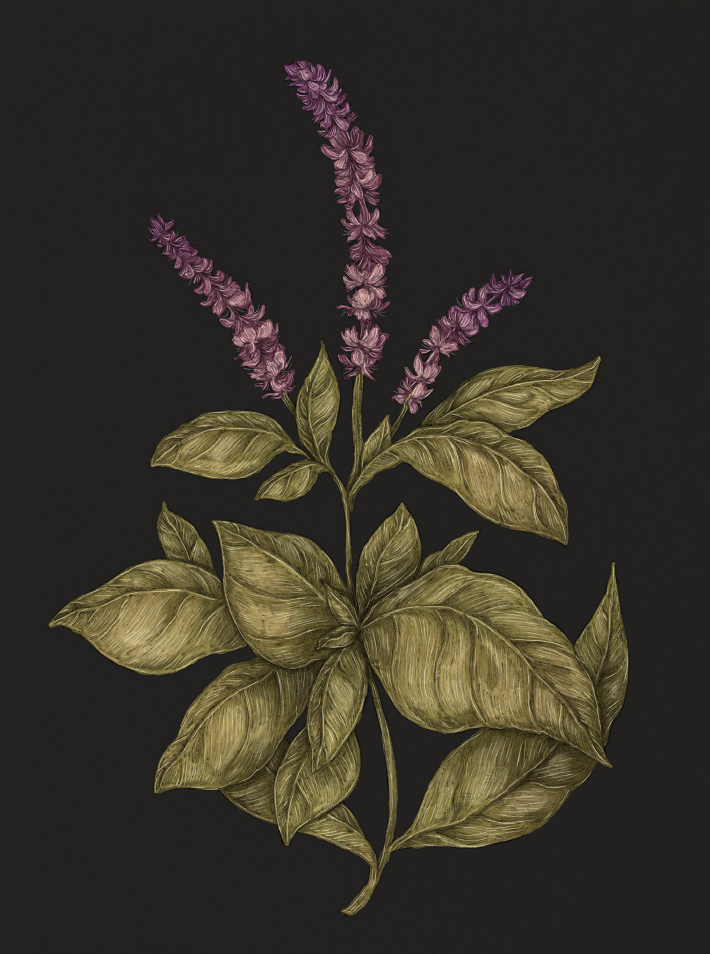

Plate BASIL
The Language of Flowers
Basil Study

Basil
Ocimum
Definition: A herb associated in floriography with hate and distrust.
Victoria's Definition: Hate
Meaning
Hate
Origin
Basil's association with hate comes from the Greeks, who believed the plant's unfolding leaves to
resemble the basilisk's opening jaws. The Greeks also associated hatred with the basilisk's glare,
because this legendary serpent could kill with just one glance.
Pair With
- Lavender for betrayal
- Oleander as a warning to someone you distrust